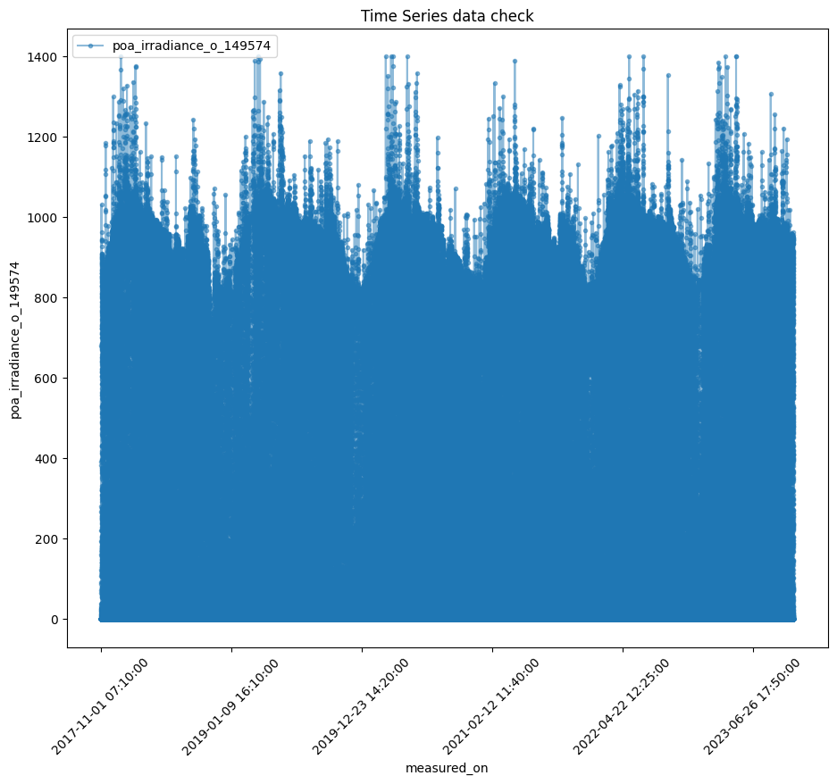

2 - Download using pvdaq_access#
Similar to tutorial 1, but here we use pvdaq_access functions which hide a lot of the aws lines inside, simplifying the data download.
Objectives:
1. Setup#
# if running on google colab, uncomment the next line and execute this cell to install the dependencies and prevent "ModuleNotFoundError" in later cells:
!pip install pvdaq_access
Defaulting to user installation because normal site-packages is not writeable
Requirement already satisfied: pvdaq_access in c:\users\sayala\documents\github\pvdaq_access (0+untagged.18.g44d26b7.dirty)
Requirement already satisfied: boto3 in c:\programdata\anaconda3\lib\site-packages (from pvdaq_access) (1.24.28)
Requirement already satisfied: botocore in c:\programdata\anaconda3\lib\site-packages (from pvdaq_access) (1.27.59)
Requirement already satisfied: jmespath in c:\programdata\anaconda3\lib\site-packages (from pvdaq_access) (0.10.0)
Requirement already satisfied: numpy in c:\users\sayala\appdata\roaming\python\python311\site-packages (from pvdaq_access) (1.24.4)
Requirement already satisfied: pandas in c:\users\sayala\appdata\roaming\python\python311\site-packages (from pvdaq_access) (2.1.0)
Requirement already satisfied: python-dateutil in c:\programdata\anaconda3\lib\site-packages (from pvdaq_access) (2.8.2)
Requirement already satisfied: pytz in c:\users\sayala\appdata\roaming\python\python311\site-packages (from pvdaq_access) (2023.3)
Requirement already satisfied: s3transfer in c:\programdata\anaconda3\lib\site-packages (from pvdaq_access) (0.6.0)
Requirement already satisfied: six in c:\programdata\anaconda3\lib\site-packages (from pvdaq_access) (1.16.0)
Requirement already satisfied: urllib3 in c:\programdata\anaconda3\lib\site-packages (from pvdaq_access) (1.26.16)
Requirement already satisfied: configparser in c:\users\sayala\appdata\roaming\python\python311\site-packages (from pvdaq_access) (6.0.0)
Requirement already satisfied: requests in c:\users\sayala\appdata\roaming\python\python311\site-packages (from pvdaq_access) (2.31.0)
Requirement already satisfied: tzdata>=2022.1 in c:\users\sayala\appdata\roaming\python\python311\site-packages (from pandas->pvdaq_access) (2023.3)
Requirement already satisfied: charset-normalizer<4,>=2 in c:\users\sayala\appdata\roaming\python\python311\site-packages (from requests->pvdaq_access) (3.2.0)
Requirement already satisfied: idna<4,>=2.5 in c:\programdata\anaconda3\lib\site-packages (from requests->pvdaq_access) (3.4)
Requirement already satisfied: certifi>=2017.4.17 in c:\programdata\anaconda3\lib\site-packages (from requests->pvdaq_access) (2023.7.22)
import pvdaq_access
import pathlib # this might not be needed as working on same directory as data here?
# This information helps with debugging and getting support :)
import sys, platform, os
print("Working on a ", platform.system(), platform.release())
print("Python version ", sys.version)
print("pvdaq_access version ", pvdaq_access.__version__)
Working on a Windows 10
Python version 3.11.4 | packaged by Anaconda, Inc. | (main, Jul 5 2023, 13:38:37) [MSC v.1916 64 bit (AMD64)]
pvdaq_access version 0+untagged.30.g8a98234
Let’s make a folder to save the data in
testfolder = 'SolarBountyDataPrize_DATA'
if not os.path.exists(testfolder):
os.makedirs(testfolder)
path = testfolder
2. Donwload the data#
print (" ..: Starting data access script for PVDAQ OEDI datasets :..")
system = '2107'
file_type = 'csv' # options: csv or parquet
SolarDataBountyPrize = True
if SolarDataBountyPrize:
#Handle Solar Data Bounty Prize archives
pvdaq_access.downloadSolarPrizeData(system, path, file_type=file_type)
else: #Normal PVDAQ archives
if file_type == 'csv':
pvdaq_access.downloadData(system, path, file_type=file_type)
elif file_type == 'parquet':
pvdaq_access.downloadData(system, path, file_type=file_type)
#Create single file from data (all files are chunked by day)
pvdaq_access.concatenateData(system, path)
..: Starting data access script for PVDAQ OEDI datasets :..
File SolarBountyDataPrize_DATA\2107_electrical_data.csv downloaded successfully.
File SolarBountyDataPrize_DATA\2107_environment_data.csv downloaded successfully.
File SolarBountyDataPrize_DATA\2107_irradiance_data.csv downloaded successfully.
File SolarBountyDataPrize_DATA\2107_meter_15m_data.csv downloaded successfully.
3. Load and plot the data#
import pandas as pd
#Read in file
df = pd.read_csv(os.path.join(path, '2107_irradiance_data.csv'))
df.set_index('measured_on', inplace=True)
#extract file info
df.info()
<class 'pandas.core.frame.DataFrame'>
Index: 531019 entries, 2017-11-01 07:10:00 to 2023-11-01 23:55:00
Data columns (total 1 columns):
# Column Non-Null Count Dtype
--- ------ -------------- -----
0 poa_irradiance_o_149574 531019 non-null float64
dtypes: float64(1)
memory usage: 8.1+ MB
Perform a quick plot to examine data
import matplotlib.pyplot as plt
#Set the plot values
plot_cols = ['poa_irradiance_o_149574']
# Add labels and title
axes = df[plot_cols].plot(marker='.', alpha=0.5, figsize=(11, 9))
#Rotate labels
plt.xticks(rotation=45)
# Show the plot
plt.xlabel('measured_on')
plt.ylabel('poa_irradiance_o_149574')
plt.title('Time Series data check')
plt.show()
